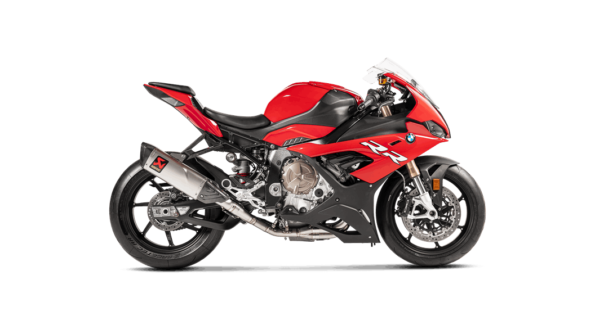

A Ducati Panigale é uma obra-prima da engenharia italiana, onde potência e elegância se fundem em perfeita harmonia. Seu motor de alto desempenho, combinado com um chassi leve e aerodinâmico, oferece uma experiência de condução incomparável. Cada curva é uma dança entre precisão e velocidade, proporcionando ao piloto uma conexão visceral com a estrada. Para os apaixonados por motociclismo, a Panigale representa o ápice da tecnologia e da emoção sobre duas rodas.
HORNERT
A Honda Hornet é uma motocicleta que transcende as expectativas, combinando potência e agilidade com um design contemporâneo e aerodinâmico. Equipada com tecnologia de ponta e um motor eficiente, oferece não apenas um desempenho excepcional, mas também conforto para longas jornadas. Seu estilo esportivo e postura imponente na estrada fazem dela uma escolha popular entre os entusiastas de motos que valorizam tanto a funcionalidade quanto a emoção de pilotar.

S1000RR
A BMW S1000RR é o pináculo da engenharia esportiva sobre duas rodas. Com um motor de alto desempenho e tecnologia de corrida incorporada, oferece uma potência impressionante e uma aceleração que desafia os limites da velocidade. Seu chassi leve e aerodinâmico proporciona uma maneabilidade excepcional em curvas e retas, enquanto os sistemas eletrônicos avançados garantem controle e segurança em todas as condições. Projetada para pilotos que buscam o máximo em desempenho e precisão, a S1000RR redefine os padrões de motocicletas esportivas de classe mundial.